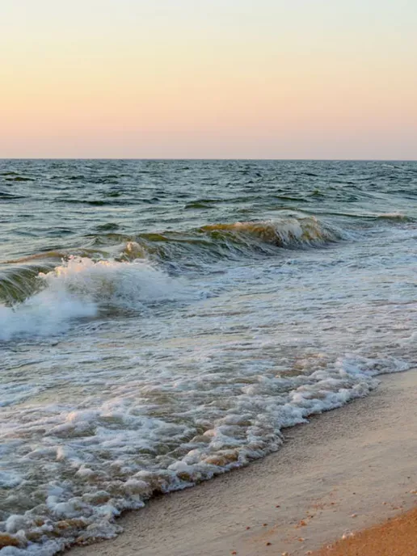

«Подорожі - це шлях до нових вражень»
Скільки себе пам’ятаю, влітку, ми завжди подорожували сім’єю на машині, рідше потягом. Останні декілька років нам довелось шукати різні формати відпочинку, осільки війна та пандемія внесли свої корективи. Зараз хочу поділитиися своїми враженнями та лайфхаками, якими ми користувалися під час поїздок.
З раннього дитинства, я подорожувала зі своїми батьками та сім’єю. Кожна подорож запам’яталась окремо. Враження та почуття завжди відрізнялися. В основному подорожували ми приморськими містами, проте, Київ та Західна частина України, Крим також присутні у нашому “архіві” спогадів. Зазвичай ми діставались місць машиною, та дуже рідко потягом. Очевидно, що зручніше було машиною. Не бути прив’язаним до часу та місця набагато зручніше, ніж постійно переживати, що кудись не встигнете.

Під час планування подорожей, пріорітетом для нас будо декілька фактів. По-перше, це місця проживання. Ми переглядали різні мотелі, хостели та іноді бронювали номера заздалегідь. По-друге ми дивилися місця, які ми б хотіли відвідати. Але також нам було цікаво відвідувати меньш популярні, проте не меньш гарні місця. Особливо цікаво, було приїздити на одні й тіж локації, але в різну пору доби. Наприклад пляж, який знаходиться у Криму, у селищі Новий Світ. Це мабуть найбільш яскравий спогад з цієї подорожі.

Ми ніколи не прораховували витрати на поїздки. Якщо це була путівка, то ціна варірувалася від 15 000 да 22 000 грн. Коли ж ми подорожували машиною, рахувати витрати було складніше, оскільки ми полюбляли зупинятися, купляти сувеніри. Саме через те, що мандруючи машиною ми могли в моменті змінити плани, заздалегідь точно прорахувати весь бюджет, не виходило. Саме тому ми ніколи не брали аж занадто багато речей. Коли ж ми мандрували потягм, легше було рахувати витрати. Коли ми, наприклад, їхали до дідусевих родичів у Волочиськ, ми могли взяти трохи більше речей, оскільки розуміли, що нам доведеться жити на одному місці приблизно тиждень-два.


Звичайно, крім житла не варто забувати про безпеку поїздки. При подорожі на машині, у нас завжди була її страховка, а також застраховані були і я з сестрою, і мама з татом, оскільки в Криму ми піднімалися на вершини гір. До поїздки, звичайнг, машина проходила повне ТО та діагностику. При собі, завжди була аптечка з най потрібнішими ліками. Також, ми завжди попереджали близьких куди і на який термін ми їдемо. Звісно, що під час подорожей ми зідзвонювались тому у родичів завжди була актуальна інформація про наше місцезнаходження. Коли ти все заздалегідь пропланував та застеріг, можна повністю насолодиися подорожжю.
Кожного разу, подорожуючи Україною, я відкриваю для себе нові та нові куточки нашої країни. Мені здається, що немає меж тому почуттю, яке виникає у мене коли я кожен раз згадую свої подорожі. Якби не пандемія та війна, я б з сім'єю продовжувала подорожувати. Я плану після закінчення війни, продовжити мандрування Україно. Також моє мрією - є відвідати Іспанію. Чомусь саме ця країна приваблює своїми краєвидами та традиціями. Мені завжди цікаво спілкуватись з людьми не тільки різних куточків України, але й світу. Дізнаватись їх принципи, погляди, культуру - виявилсь дуже цікавою, для мене, справою.
